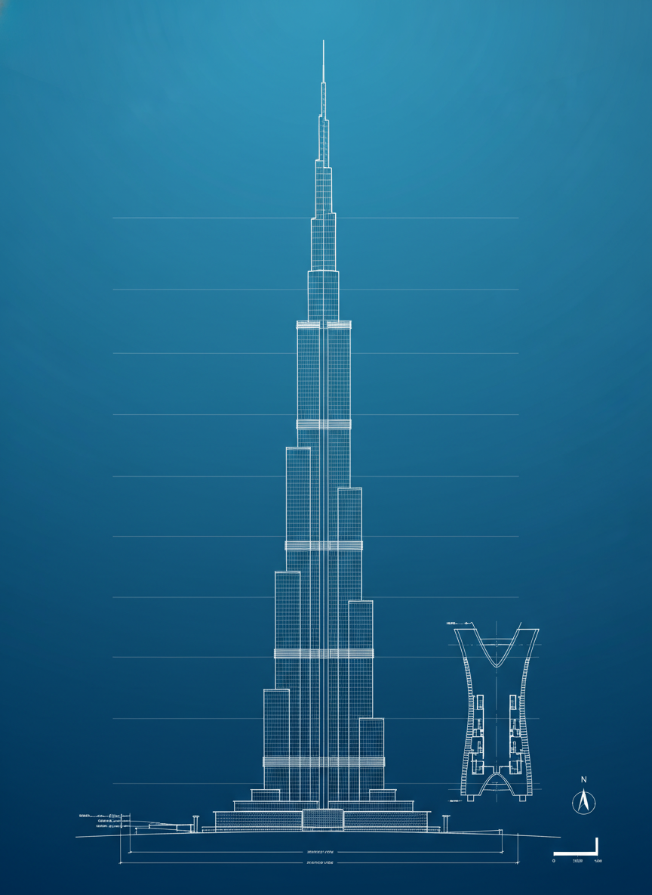
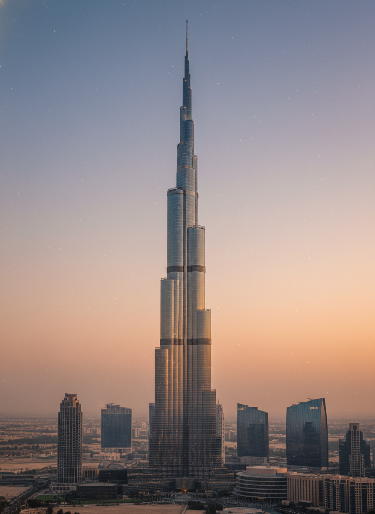

// SIGHTS · No. 01 Studies in Vertical Geometry
A continuous reveal — drafting room to desert evening — generated frame by frame from a single technical elevation. Ten seconds. One tower. A quiet study in how a drawing decides to become a building.
Pure schematic. Line on paper — every floor a hairline, every measurement a promise.
Geometry awakens. The grid breathes; the wireframe carries the first hint of weight.
Material returns. Glass, aluminium, concrete — the cladding finds its grain.
Golden hour. Reflections sharpen, shadows lengthen, the desert sky agrees to participate.
Burj Khalifa — 828 m of evidence that the drawing was right.
“The drawing remembers the building before the building remembers itself.”
Field Notes · Studio of Vertical Things
A camera pushes; a wireframe softens; surfaces find their light. The reveal you scrub through is computed, but the geometry beneath it is real.
// 02 Source Frames
The film is bookended by these two images. Everything between them is interpolated — guided only by the prompt and the geometry of the page.


// 03 Vitals
Public record. Verified by the Council on Tall Buildings and Urban Habitat — the figures the drawing was asked to honour.
// 04 Forthcoming
The archive is small on purpose. New towers, bridges, and stations enter the series only when they survive a long stare.